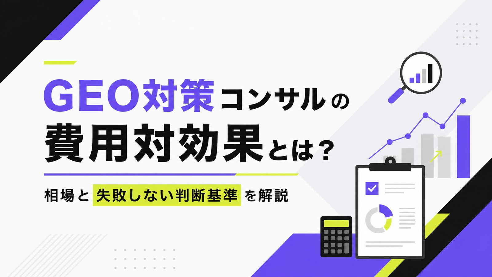
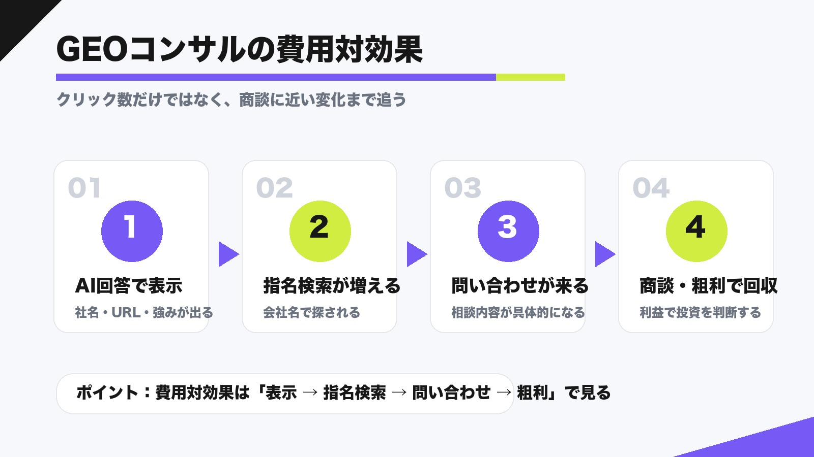
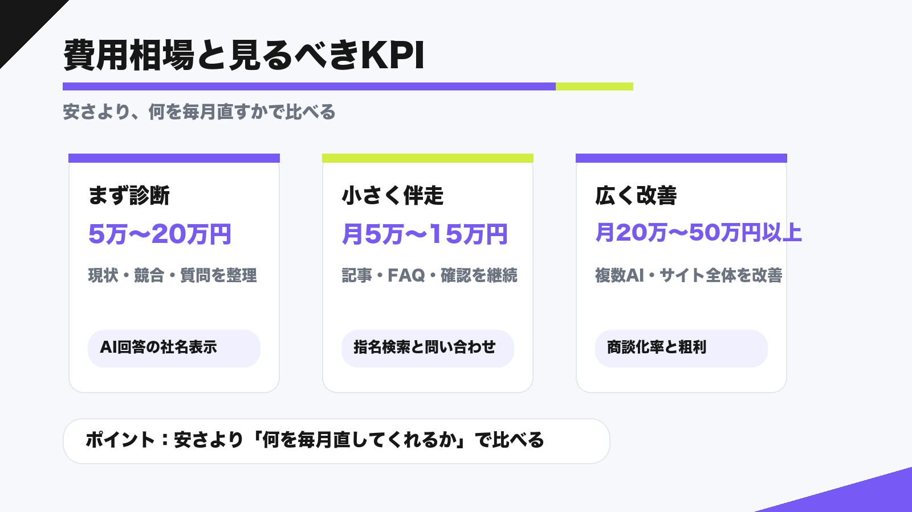
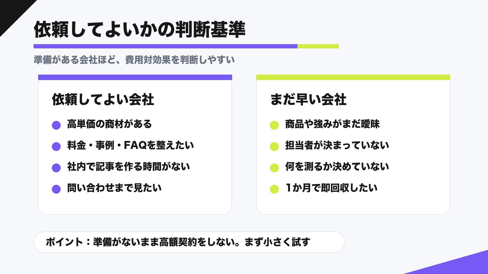

GEO対策コンサルの費用対効果とは？相場と失敗しない判断基準を解説

GEO対策コンサルを検討するとき、多くの人が最初に迷うのは「本当にお金をかける意味があるのか」です。AI回答に自社名が出ても、すぐ売上になるとは限りません。逆に、アクセス数が少なく見えても、指名検索や問い合わせの質が上がることがあります。
費用対効果を見るコツは、クリック数だけで判断しないことです。GEO対策では、AI回答での社名表示、引用URL、指名検索、問い合わせ、商談、粗利までを一本の流れで見ます。
この記事では、GEO対策コンサルの費用相場、投資回収の考え方、投資してよい状態とまだ早い状態の判断基準を、専門用語をできるだけ減らして解説します。依頼先そのものを比較したい方は、GEO対策会社の比較記事もあわせて確認してください。
目次

GEO対策コンサルの費用対効果とは
GEO対策コンサルの費用対効果とは、GEO対策に使った費用に対して、AI検索上の表示や問い合わせ、売上にどれくらいつながったかを見る考え方です。広告のように「1クリックいくら」で見えるものではないため、少し広く考える必要があります。
クリック数だけでは判断できない
GEO対策では、AI回答の中で会社名やサービス名が出ても、ユーザーがすぐサイトをクリックしないことがあります。AI上で比較が進み、その後に会社名で検索したり、直接問い合わせたりする流れもあります。
そのため、費用対効果を見るときはクリック数だけで判断しないことが大切です。AI回答で名前が出たか、どのページが引用されたか、指名検索が増えたか、問い合わせ内容が具体的になったかを合わせて見ます。
「参考になるウェブサイトへのリンクを得られます」
投資額と成果を同じ月だけで比べない
GEO対策は、記事を出した月にすぐ受注が増える施策ではありません。記事が検索に認識され、AI回答に反映され、ユーザーが比較し、問い合わせるまでには時間がかかります。
最初は3か月単位で見るのが現実的です。1か月目は現状確認と記事公開、2か月目は表示確認と修正、3か月目は問い合わせや指名検索の変化を見る、という流れにすると判断しやすくなります。

GEO対策コンサルの費用相場
GEO対策コンサルの費用は、診断だけか、月額で改善まで見るか、記事制作やサイト修正まで含むかで変わります。ざっくり見ると、スポット診断、小さな月額伴走、広めの改善支援の3段階です。
| 支援タイプ | 費用の目安 | 主な内容 |
|---|---|---|
| スポット診断 | 5万〜20万円前後 | AI回答での現状確認、競合調査、質問設計、改善案 |
| 小さな月額伴走 | 月5万〜15万円前後 | 記事制作、FAQ追加、簡易モニタリング、月次改善 |
| 広めの改善支援 | 月20万〜50万円以上 | 複数AIの調査、SEO改善、サイト構造、レポート、実装支援 |
スポット診断は5万〜20万円前後
スポット診断は、まず今の状態を見てもらうための入口です。自社名、サービス名、比較ワード、地域ワードでAIにどう表示されるかを確認し、足りない記事やサービスページを整理します。
費用は5万〜20万円前後が目安です。安い診断は確認範囲が狭く、高い診断は競合比較や記事案まで含まれることが多いです。初めてなら、まず診断で投資するべきテーマを決めると無駄が減ります。
月額伴走は5万〜30万円前後
月額伴走は、毎月少しずつ記事やFAQを整え、AI回答での見え方を確認していく支援です。中小企業が始めるなら、最初から大きな調査をするより、問い合わせに近い質問に絞るほうが現実的です。
費用は月5万〜30万円前後で幅があります。毎月の会議や分厚いレポートが多いほど高くなります。AIMAは、月額5万円で質問設計・記事作成・修正まで小さく回す形を取りやすいのが特徴です。
記事制作やサイト修正は総額を左右する
GEO対策は、アドバイスを受けるだけでは進みません。AIが引用しやすい記事、比較表、料金説明、FAQ、会社情報、事例などを実際に増やす必要があります。
見積もりでは、記事制作が月額内か別料金かを必ず確認しましょう。相談料は安くても、記事制作や入稿が別料金だと総額が上がります。逆に、制作まで含むなら少額でも前に進めやすくなります。

参考：バクリ株式会社｜GEO対策会社おすすめ20選！選び方・費用相場・依頼前の注意点を解説【2026年版】
参考：株式会社ジンライ｜GEO対策会社おすすめ12選｜AI検索最適化の費用相場と選び方【2026年版】
費用対効果を見るためのKPI
KPIとは、成果を見るための目印です。難しく考える必要はありません。GEO対策では「AIで見つかる」「会社名で探される」「問い合わせにつながる」の3つを順番に見れば十分です。
AI回答での社名表示と引用URL
最初に見るのは、ChatGPT、Gemini、Perplexity、Google AI Overviewsなどで、自社名や自社ページが出るかです。表示された場合は、どの質問で出たか、競合と並んだか、どのURLが使われたかを残します。
ここでは社名表示と引用URLをセットで見ます。名前だけ出ても、古い情報や別ページが参照されているなら改善が必要です。料金、対応範囲、事例、FAQを読みやすく整えると、AIにも人にも伝わりやすくなります。
「OAI-SearchBot is used to surface websites in search results in ChatGPT’s search features.」
指名検索数とサービス名検索
AI回答を見た人は、その場でクリックせず、あとから会社名やサービス名で検索することがあります。だから、Google Search Consoleで会社名、サービス名、代表者名、地域名との組み合わせを確認します。
費用対効果を見るなら指名検索の増加も大事です。指名検索は「その会社をもっと知りたい」という行動なので、単なるアクセス数より問い合わせに近いサインになります。
問い合わせ内容と商談化率
最終的には、問い合わせの数だけでなく中身を見ます。「GEO対策を相談したい」「AI検索で会社名を出したい」「料金を知りたい」のように具体的な相談が増えているなら、GEO対策が効き始めている可能性があります。
受注まで見る場合は、問い合わせから商談になった割合、受注単価、粗利を確認します。GEO対策の投資回収は売上ではなく粗利で見ると、現実に近い判断ができます。
「Search Console の全検索トラフィックに反映されます」
失敗しない判断基準
GEO対策コンサルは、どの会社にも必ず必要なものではありません。依頼すると効果が出やすい会社もあれば、まだ社内準備を先にしたほうがよい会社もあります。
投資してよい状態の特徴
投資してよいのは、売りたい商品やサービスがはっきりしていて、問い合わせ1件の価値が高い状態です。BtoB、士業、専門サービス、地域ビジネス、採用や資料請求につなげたい会社は相性がよいです。
特に、料金ページ、比較記事、事例、FAQが足りない場合は、GEO対策で直す場所が明確です。高単価で説明が必要な商材ほど、AI回答で候補に入る価値が大きくなります。
まだ投資を急がないほうがよい状態
逆に、サービス内容がまだ固まっていない、強みが言語化できていない、社内担当者がいない、問い合わせ後の対応が整っていない場合は、先に準備をしたほうが安全です。
GEO対策は魔法ではありません。売るものが曖昧なまま高額コンサルを入れても、AIに何を伝えるべきかが決まりません。まずは料金、対応範囲、よくある質問、事例を整理しましょう。
提案書で必ず見るポイント
提案書を見るときは、「GEO対策一式」とだけ書かれていないかを確認してください。どのAIを調べるのか、何問見るのか、何本記事を作るのか、どのページを直すのか、成果をどう見るのかが必要です。
良い提案書は、作業内容が具体的です。たとえば「月1本の記事」「月10問のAI表示確認」「既存ページ2本のリライト」まで書かれていれば、費用対効果をあとから振り返りやすくなります。

AIMAで小さく始めるGEO対策
AIMAでは、いきなり高額なコンサル契約を前提にせず、月額5万円で小さく始めるLLMO/GEO対策を提供しています。対象は、AI検索で候補に入りたい中小企業、地域ビジネス、BtoBサービス、士業、専門サービスです。
月5万円で作業を絞る
低予算で費用対効果を出すには、会議や分厚いレポートより、実際に検索される質問へ答えるページを作ることが重要です。AIMAでは、質問設計、記事作成、既存記事の修正、簡易的な表示確認を中心に進めます。
最初から全キーワードを追うのではなく、問い合わせに近い質問を優先します。「地域名＋サービス」「費用」「おすすめ」「比較」「導入事例」など、商談につながりやすいテーマから整える考え方です。
相談回数を気にせず進める
GEO対策は、進めながら疑問が出やすい施策です。「この質問を狙うべきか」「この記事はAIに伝わるか」「SEO会社の提案と何が違うか」など、細かい確認が必要になります。
AIMAは相談回数の上限を設けない形で進めるため、初めての方でも質問しながら進めやすいです。Webマーケティング全体の相談も、GEO対策と関係する範囲であれば一緒に整理します。詳しくはAIMAのサービス内容をご覧ください。
GEO対策コンサルの費用対効果に関するよくある質問
GEO対策コンサルの費用対効果は何か月で判断すべきですか？
まず3か月を目安にします。1か月目で現状確認と記事公開、2か月目で表示確認と修正、3か月目で指名検索や問い合わせの変化を見ると判断しやすくなります。BtoBのように受注まで長い場合は、6か月以上で見るほうが現実的です。
月5万円でもGEO対策は意味がありますか？
意味はあります。ただし、広い調査や大規模なレポートまで求めると足りません。月5万円なら、作業を絞ることが大切です。質問設計、記事制作、FAQ追加、引用状況の確認のように、成果に近い作業へ集中しましょう。
GEO対策はSEOコンサルと別に依頼すべきですか？
既存SEOの改善が止まっている場合は、SEOとGEOを一緒に見られる支援が向いています。AI回答の確認や質問設計まで必要なら、GEOに詳しい会社へ相談する価値があります。SEOとの違いはAIOとSEOの違いを解説した記事も参考になります。
まとめ
GEO対策コンサルの費用対効果は、クリック数だけでは判断できません。AI回答での社名表示、引用URL、指名検索、問い合わせ、商談、粗利までを順番に見る必要があります。
費用相場は、スポット診断なら5万〜20万円前後、小さな月額伴走なら月5万〜15万円前後、広めの改善支援なら月20万〜50万円以上が目安です。大切なのは、料金の安さではなく、毎月何を直してくれるかです。
まず小さくGEO対策を始めたい場合は、問い合わせに近い質問から記事やFAQを整えるのがおすすめです。AIMAでは月額5万円、相談回数の上限なし、記事作成・修正込みで始められます。自社に合う進め方を知りたい方は、無料LLMO診断からご相談ください。